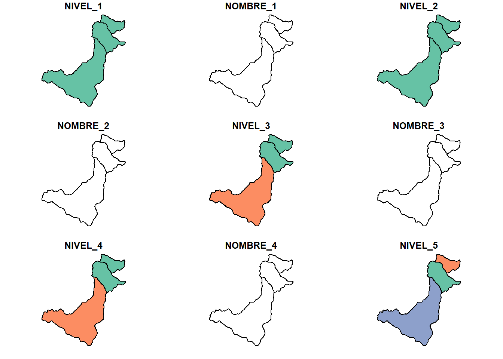
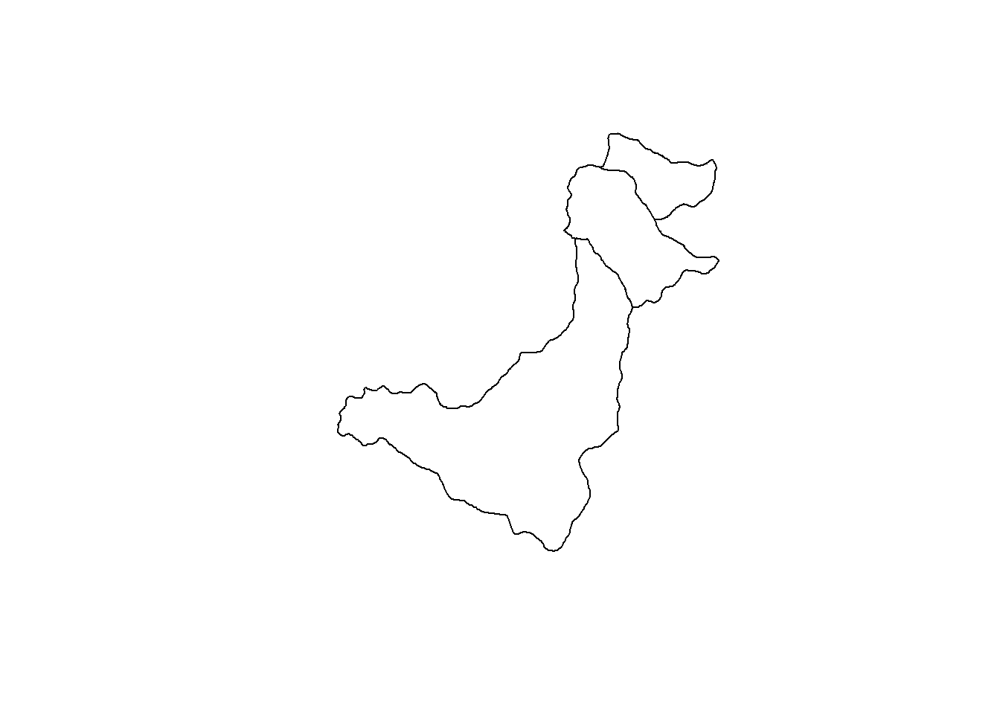
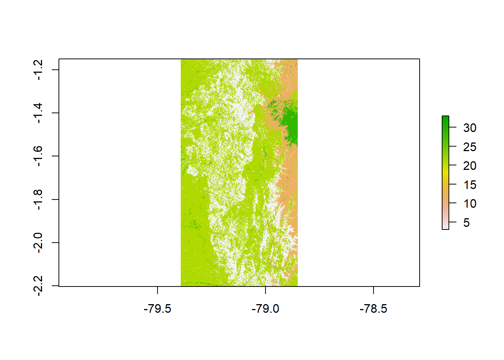
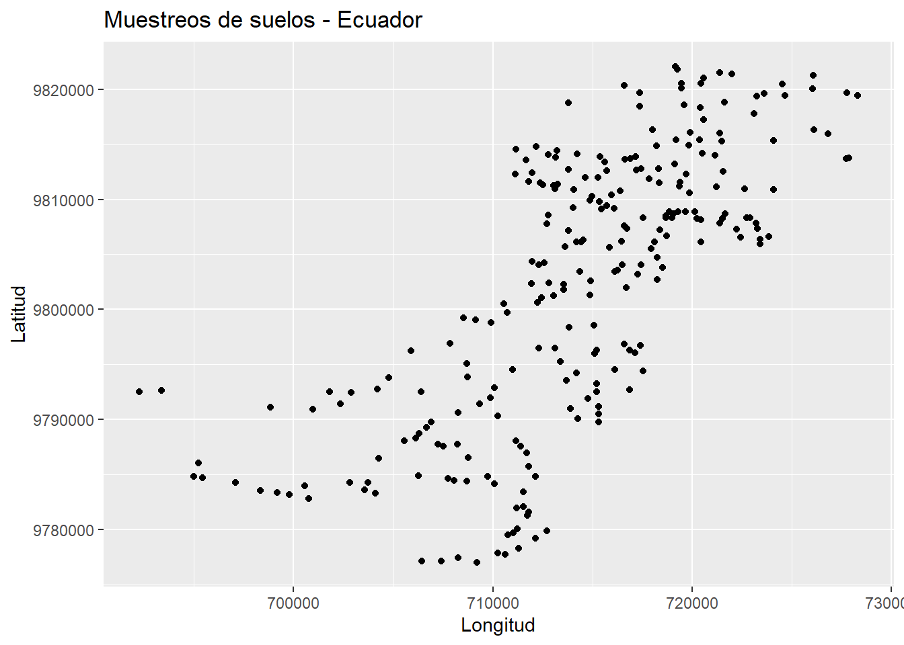
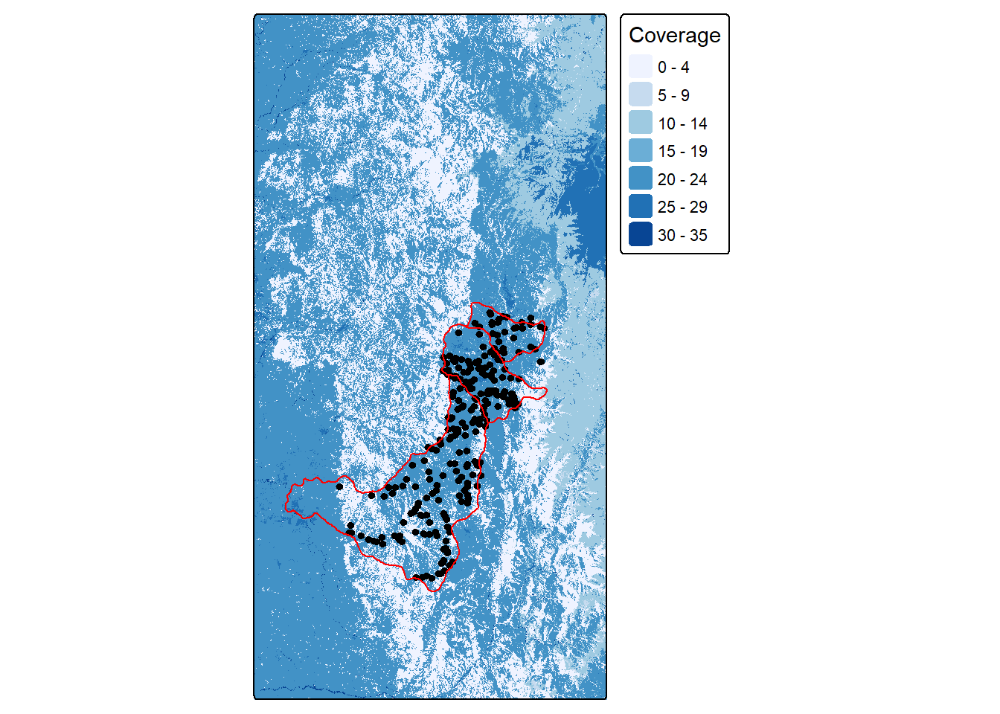

Las diferentes estructuras de datos son formatos que organizan y almacenan información. Para visualizarlos, existe un gran conjunto de paquetes en R disponibles que permiten trabajar con datos espaciales y espacio-temporales.
Estos paquetes se describen en la Vista de tareas de Cran: Análisis de datos espaciales . La vista de tareas de CRAN organiza los distintos paquetes en categorías, donde se pueden identificar las opciones de paquetes según las necesidades del proyecto.
Antes de iniciar con los procesos de visualización, se recomienda cargar todas las librerías que se usarán. Para agilizar los procesos que se llevarán a cabo y asegurar que las funciones operen de manera correcta.
NoteCargar librerías
library(sf)
Linking to GEOS 3.13.0, GDAL 3.10.1, PROJ 9.5.1; sf_use_s2() is TRUE
library(ggplot2)library(raster)
Loading required package: sp
library(readxl)library(tmap)library(plotly)
Attaching package: 'plotly'
The following object is masked from 'package:raster':
select
The following object is masked from 'package:ggplot2':
last_plot
The following object is masked from 'package:stats':
filter
The following object is masked from 'package:graphics':
layout
La función plot() es una función genérica de R que está disponible en el paquete base del programa. Su objetivo principal es crear gráficos y permite una visualización de forma sencilla.
De acuerdo al tipo de dato que se proporcione como argumento, generará diferentes tipos de gráfica. Además, para cada tipo de gráfico, se pueden ajustar diferentes parámetros que controlan su aspecto. Todas las modificiaciones se realizan dentro de la misma función.
NotePlot en dataframe
plot(cuencas)
Warning: plotting the first 9 out of 15 attributes; use max.plot = 15 to plot
all

9.1.1 St_geometry
Para visualizar un atributo en específico dentro del shape, se puede utilizar la función st_geometry(), la cuál pertenece a la librería sf. Dentro de la función se nombra el elemento que se desea traer del shapefile y devuelve la geometría del mismo.
NoteCódigo
plot(st_geometry(cuencas, SHAPE_Area))

NotePlot en ráster
plot(raster)

Ventajas:
Facilidad de uso y entendimiento
Es eficiente en conjuntos de datos pequeños
Desventajas:
La personalización y el diseño es limitado
Los recursos son limitados para generar los gráficos avanzados
9.2Ggplot2
Esta librería permite elaborar gráficos a partir de un proceso de acumulación de capas. Tiene cierto grado de complejidad, pero permite obtener resultados muy profesionales. Esta librería en particular solo acepta un tipo de datos: dataframes.
NoteMapa sencillo
# Mapa base sencillo vectorggplot(data = cuencas) +geom_sf()
NoteEdición de las capas
ggplot() +geom_sf(data = cuencas, fill ="lightblue", color ="black") +labs(title ="Visualización del Shapefile con ggplot2") +theme_minimal()
Ventajas:
Tiene una estructura de fácil entendimiento
Alta capacidad para crear gráficos complejos al adicionar capas
Se puede integrar con dplyr y tidyr
Desventajas:
Descripción detallada de cada objeto que se quiere agregar
Sólo permite graficar los datos espaciales tipo shape
9.3Plotly
Plotly es una librería Open Source que sirve para generar visualizaciones de datos en forma de gráficos y mapas interactivos.
Dentro de sus ventajas se encuentra que es integrada en múltiples lenguajes y plataformas, así como la facilidad que ofrece para compartir los gráficos, mapas y visualizaciones de datos creados con esta librería. Por otra parte, al ser mapas interactivos permite mover el cursor dentro del mismo, hacer zoom, seleccionar elementos, entre otros.
NoteCódigo
plot_ly(data = cuencas, type ="scatter",colors ="Set1") %>%layout(title ="Visualización del Shapefile")
Ventajas
Los gráficos que se construyen son interactivos
Se puede personalizar el diseño
Tiene facilidad para ser exportados y compartidos: HTML, PNG y SVG
Desventajas
El rendimiento en grandes conjuntos de datos es limitado
No se integra a los datos ráster
9.4 Graficar a partir de datos en tablas o matrices
Cuando se tienen datos espaciales en fromatos de tablas o matrices, se pueden volver mapas al relacionarlos con las funciones adecuadas de cada librería.
NoteMapear a partir de datos
Se carga el arcivo .csv o .xlsx con los datos
NoteCargar archivo
df =read_excel("datos/cap09/datos_suelo_EC.xlsx") #También puedes cargar el shape de horizontes y volverlo un dataframedf=data.frame(lapply(df, type.convert,as.is =TRUE))
Una de las librerías más útiles para este proceso es ggplot: se agregan los datos, se definen los ejes y demás atributos del mapa para finalmente obtener un mapa con los datos proporcionados:
NoteVisualización
ggplot(df, aes(x = CORX, y = CORY)) +geom_point() +ggtitle("Muestreos de suelos - Ecuador")+xlab("Longitud") +ylab("Latitud")

9.5Tmap
Esta librería está diseñada para la visualización de datos geoespaciales. Proporciona una interfaz fácil de usar para crear mapas temáticos (thematic maps) y mapas interactivos, lo que permite una visualización con un fácil entendimiento de los datos espaciales.
── tmap v3 code detected ───────────────────────────────────────────────────────
[v3->v4] `tm_tm_raster()`: migrate the argument(s) related to the scale of the
map variable `col` namely 'palette' (rename to 'values') to col.scale =
tm_scale(<HERE>).[v3->v4] `tm_raster()`: migrate the argument(s) related to the legend of the
map variable `col` namely 'title' to 'col.legend = tm_legend(<HERE>)'[v3->v4] `tm_tm_dots()`: migrate the argument(s) related to the scale of the
map variable `fill` namely 'palette' (rename to 'values') to fill.scale =
tm_scale(<HERE>).[cols4all] color palettes: use palettes from the R package cols4all. Run
`cols4all::c4a_gui()` to explore them. The old palette name "Blues" is named
"brewer.blues"

Ventajas:
Sintaxis simple e intuitiva
Su funcionalidad es específicamente para datos geoespaciales